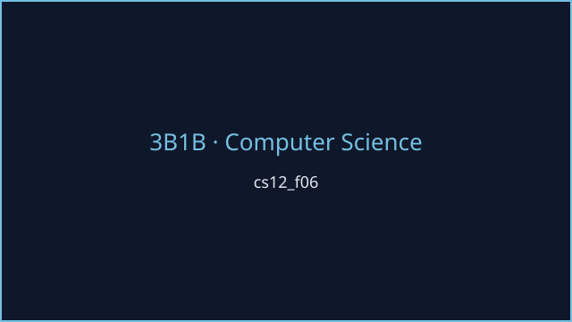

আগের পাঠে গ্রোভারের অ্যালগরিদম ব্যাখ্যা করার পর অনেক প্রশ্ন এলো—''প্রতিফলন আসলে কী করে?'', ''রৈখিকতা কেন মানে চলে?'', ''অ্যাম্প্লিচিউড বাড়লেই কি সম্ভাবনা বাড়ে?''। এই পাঠে সেই ফাঁকগুলো পূরণ করব।
আগের ব্যাখ্যায় কিছু জায়গা ''অনুভূতিপ্রবণ'' ছিল—এখন আমরা সেগুলো নিখুঁতভাবে দেখব।
কোয়ান্টাম অপারেশন ''রৈখিক''—অর্থাৎ সুপারপজিশনের ওপর কাজ করলে ফলাফলও ওই সুপারপজিশনেরই রূপ। কোনো অপারেশন এক অবস্থাটিকে ''দেখে'' অন্যরকম আচরণ করতে পারে না।
এই কারণেই আমরা কোনো নির্দিষ্ট উত্তর ''না দেখেই'' তার অ্যাম্প্লিচিউডের চিহ্ন বদলাতে পারি—অরাকেল ঠিক এটিই করে।
গড় অ্যাম্প্লিচিউড ( $|\psi\rangle$ )-এর সাপেক্ষে প্রতিফলন মানে—প্রতিটি অ্যাম্প্লিচিউডকে তার গড়ের চারপাশে ''উল্টে'' দেওয়া। যারা গড়ের ওপরে ছিল নিচে নামে, যারা নিচে ছিল ওপরে—কিন্তু চিহ্নের কারণে লক্ষ্যের অ্যাম্প্লিচিউড বেড়ে যায়।
আগের পাঠে ''ভেক্টর ঘুরছে'' বলে যে ছবি দেওয়া হয়েছিল, তা আংশিক সত্য। সঠিক ছবি হলো—অ্যাম্প্লিচিউডের ''বিন্দু'' প্রতিফলনের মাধ্যমে গড়ের চারপাশে সরে যায়। রৈখিকতা ও হস্তক্ষেপই এর গতি নির্ধারণ করে।
প্রতি ধাপে $\theta$ কোণে ঘূর্ণন; $\sqrt{N}$ ধাপে মোট $\approx \pi/2$—তখন সম্ভাবনা প্রায় ১।
ভুল ব্যাখ্যাও শিখতে সাহায্য করে—প্রশ্নগুলো আসলে আমাদের বোঝাপড়াকে গভীর করেছে। কোয়ান্টাম অ্যালগরিদম বোঝার মূল চাবিকাঠি হলো রৈখিকতা ও অ্যাম্প্লিচিউডের চিহ্ন।
নিচের ইন্টারেক্টিভ উপাদান ও কুইজের মাধ্যমে পাঠের ধারণা নিজে যাচাই করুন।
